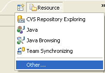
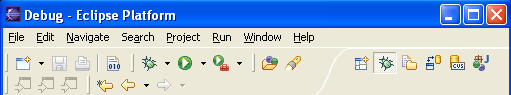
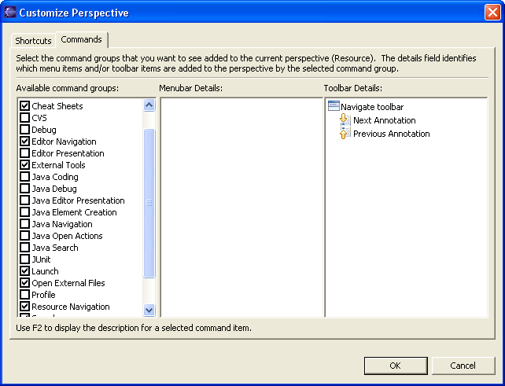

Each Workbench window contains one or more perspectives. A perspective defines the initial set and layout of views in the Workbench window. Within the window, each perspective shares the same set of editors. Each perspective provides a set of capabilities aimed at accomplishing a specific type of task or works with specific types of resources. For example, the Java perspective combines views that you would commonly use while editing Java source files, while the Debug perspective contains the views that you would use while debugging Java programs. As you work in the Workbench, you will probably switch perspectives frequently.
Perspectives control what appears in certain menus and toolbars. They define visible action sets, which you can change to customize a perspective. You can save a perspective that you build in this manner, making your own custom perspective that you can open again later.
You can set your Workbench preferences to open perspectives in the same window or in a new window.
The main perspectives for developing Perl applications are


Views support editors and provide alternative presentations as well as ways to navigate the information in your Workbench. For example, the Navigator view displays projects and other resources that you are working with.
Views also have their own menus. To open the menu for a view, click the icon at the left end of the view's title bar. Some views also have their own toolbars. The actions represented by buttons on view toolbars only affect the items within that view.
A view might appear by itself, or stacked with other views in a tabbed notebook. You can change the layout of a perspective by opening and closing views and by docking them in different positions in the Workbench window.
There are several ways to open a new perspective within this Workbench window:
Using the Open Perspective button
on the shortcut bar.
Choosing a perspective from the Window > Open Perspective menu.
To open one by using the shortcut bar button:
Click on the Open Perspective button
.A menu appears showing the same choices as shown on the Window > Open Perspective menu. Choose Other from the menu.
In the Select Perspective dialog choose Debug and click OK.

The Debug perspective is displayed.
There are several other interesting things to take note of.
The title of the window now indicates that the Debug perspective is in use.
The shortcut bar contains several perspectives, the original Resource perspective, the new Debug perspective and a few others. The Debug perspective button is pressed in, indicating that it is the current perspective.
To disply the full name of the perspective right click the perspective bar and check Show Text.

In the shortcut bar, click on the Resource perspective button. The Resource perspective is once again the current perspective. Notice that the set of views is different for each of the perspectives.
In addition to configuring the layout of a perspective you can also control several other key aspects of a perspective. These include:
The New menu.
The Window > Open Perspective menu.
The Window > Show View menu.
Action sets that show up on the toolbar.
In the shortcut bar click on the Resource perspective.
Select Window > Customize Perspective...
Select the Commands tab.
Check Launch and click OK.
Observe that the toolbar now includes buttons for debug/run launching.

After experimenting with the other options on the Customize Perspective dialog, choose Window > Reset Perspective to return the perspective to its original state.
If you have modified a perspective by adding, deleting, or moving (docking) views, you can save your changes for future use.
Switch to the perspective that you want to save.
Click Window > Save Perspective As.
Type a new name for the perspective into the Name field.
Click OK.
Perspectives offer pre-defined combinations of views and editors. To open a view that is not included in the current perspective, select Window > Show View from the main menu bar.
You can create fast views to provide a shortcut to views that you use often.
After adding a view to the current perspective, you may wish to save your new layout by clicking Window > Save Perspective As.
To change the location of a view in the current perspective:
Drag the view by its title bar. Do not release the left mouse button yet.
As you move the view around the Workbench, the mouse pointer changes to one of the drop cursors shown in the table below. The drop cursor indicates where the view will be docked if you release the left mouse button. To see the drop cursor change, drag the view over the left, right, top, or bottom border of another view or editor.
When the view is in the location that you want, relative to the view or editor area underneath the drop cursor, release the left mouse button.
(Optional) If you want to save your changes, select Window > Save Perspective As from the main menu bar.
Note that a group of stacked views can be dragged using the empty space to the right of the view tabs.